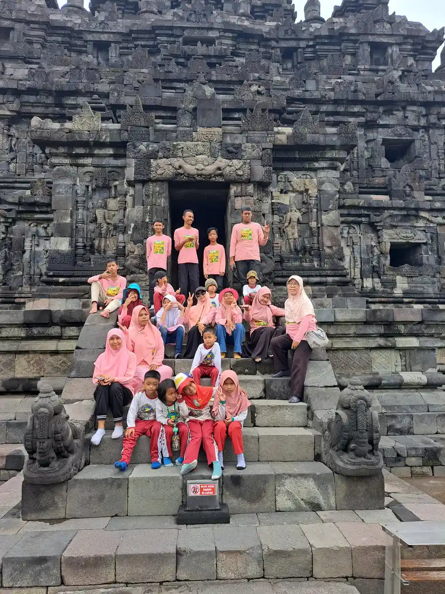
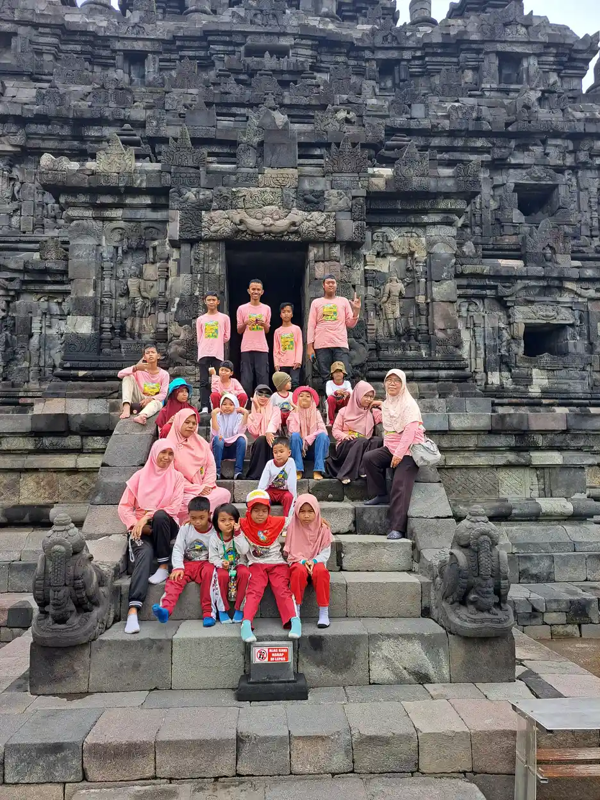

Perbedaan utama Bisindo dan SIBI terletak pada asal perkembangan dan struktur bahasanya, bukan sekadar jumlah tangan. Bisindo berkembang secara alamiah dalam komunitas Tuli dan memiliki tata bahasa serta variasi daerah. SIBI adalah Sistem Isyarat Bahasa Indonesia, sistem yang disusun untuk merepresentasikan kosakata dan struktur bahasa Indonesia. Saat memilih cara berkomunikasi, tanyakan preferensi orang Tuli yang bersangkutan dan kebutuhan aksesnya, bukan menebak dari sekolah atau penampilannya.
Daftar Isi
- Memahami perbedaan bahasa alami dan sistem isyarat
- Tabel perbedaan Bisindo dan SIBI dalam penggunaan
- Mengapa satu tangan versus dua tangan bukan patokan?
- Struktur kalimat dan imbuhan membuat tujuan belajar berbeda
- Variasi Bisindo bukan kesalahan yang harus diseragamkan
- Utamakan preferensi orang Tuli, bukan asumsi orang dengar
- Memilih dukungan komunikasi untuk sekolah dan keluarga
- Belajar Bisindo atau SIBI secara bertanggung jawab
- Merencanakan akses dan klarifikasi bersama pengguna Tuli
- Menilai materi alfabet dan video secara bertanggung jawab
- Menerapkan perbandingan pada situasi nyata
- Daftar periksa sebelum memilih materi atau layanan
- Pertanyaan yang sering diajukan tentang Bisindo dan SIBI
Memahami perbedaan bahasa alami dan sistem isyarat
Bahasa alami tumbuh melalui interaksi para penggunanya. Ia bukan kumpulan gerakan yang dirancang sebagai padanan satu per satu untuk bahasa lisan. Pusbisindo menjelaskan bahwa Bisindo merupakan bahasa alamiah komunitas Tuli, berkaitan dengan identitas dan budaya, serta memiliki tata bahasa tersendiri. Tangan, ekspresi, dan tubuh bekerja bersama dalam penyampaian pesan. Karena itu, mempelajarinya membutuhkan interaksi dan pemahaman konteks, bukan hanya menghafal daftar kosakata.
SIBI mempunyai tujuan pengembangan yang berbeda. Dalam profil Kamus SIBI Kemendikdasmen, sistem ini dijelaskan sebagai perangkat isyarat yang melambangkan kosakata bahasa Indonesia dan mewakili sintaksisnya. Kata dasar, imbuhan, dan susunan pesan menjadi bagian penting dari kerangkanya. Perbedaan tersebut membuat label bahasa Indonesia yang diisyaratkan lebih menjelaskan tujuan SIBI daripada menyebutnya Bisindo versi formal.
Pembedaan ini tidak menilai kecerdasan atau kemampuan seseorang. Orang dapat mengenal Bisindo, SIBI, bahasa Indonesia tulis, ujaran, atau kombinasi beberapa cara sesuai pengalaman dan kebutuhannya. Untuk pengenalan umum, baca apa itu Bisindo. Artikel perbandingan ini berfokus pada cara membaca perbedaannya dan membuat keputusan komunikasi, bukan mengulang panduan kosakata. Yang harus dinilai ialah apakah pesan benar-benar dipahami dan orang dapat berpartisipasi, bukan apakah komunikasinya terlihat paling nyaman bagi pihak dengar.
Tabel perbedaan Bisindo dan SIBI dalam penggunaan
Tabel berikut merupakan ringkasan fungsi dan struktur, bukan aturan yang dapat digunakan untuk mengidentifikasi setiap orang Tuli. Pengalaman pendidikan dan kebiasaan komunikasi sangat beragam. Seseorang yang pernah belajar SIBI di sekolah tidak otomatis menggunakannya dalam semua percakapan. Sebaliknya, seseorang yang memakai Bisindo dalam komunitas tetap dapat belajar bahasa Indonesia tulis. Hindari menyimpulkan kemampuan bahasa seseorang hanya dari satu interaksi singkat.
| Aspek | Bisindo | SIBI |
|---|---|---|
| Perkembangan | Tumbuh dalam interaksi komunitas Tuli | Disusun dan dibakukan sebagai sistem representasi bahasa Indonesia |
| Struktur pesan | Mempunyai tata bahasa alami komunitas penggunanya | Berorientasi pada struktur dan kosakata bahasa Indonesia |
| Imbuhan bahasa Indonesia | Tidak berarti harus memindahkan setiap imbuhan secara terpisah | Mempunyai perangkat isyarat untuk imbuhan dan partikel |
| Variasi | Memiliki variasi antardaerah dan komunitas | Mengacu pada perangkat kamus yang dibakukan |
| Konteks belajar | Interaksi komunitas dan pembelajaran dengan guru Tuli | Digunakan sebagai media dalam konteks pendidikan tertentu |
| Keputusan komunikasi | Ikuti preferensi dan pemahaman lawan bicara | Pastikan pengguna memang memahami sistem yang dipakai |
| Jumlah tangan | Tidak menjadi identitas bahasa hanya dari satu isyarat | Penampil dapat tangan kanan, kiri, atau kedua tangan |
| Ekspresi dan tubuh | Bagian dari penyampaian bahasa visual | Profil resmi juga memuat mimik muka dan gerak tubuh |
Ringkasan ini perlu dibaca bersama penjelasan sumber, bukan dipotong menjadi perlombaan mana yang lebih unggul. Tidak ada tabel yang dapat menggantikan pertanyaan sederhana tentang cara komunikasi yang disukai. Istilah umum dalam pengenalan bahasa isyarat membantu memperluas konteks: bahasa isyarat bukan satu bahasa universal yang otomatis sama di seluruh dunia. Demikian juga, pembakuan suatu sistem tidak membuktikan bahwa semua orang mempunyai pengalaman bahasa yang seragam.

Mengapa satu tangan versus dua tangan bukan patokan?
Perbandingan populer sering merangkum Bisindo sebagai dua tangan dan SIBI sebagai satu tangan. Ringkasan itu tidak memadai untuk menjelaskan perbedaan struktur. Profil resmi Kamus SIBI justru menyebut tangan kanan, tangan kiri, atau kedua tangan sebagai penampil, serta membahas posisi kedua tangan. Petunjuk penggunaan kamus juga memuat posisi berdampingan, berjajar, dan bersilang apabila penampilnya dua tangan. Jadi, klaim bahwa SIBI selalu hanya menggunakan satu tangan tidak sesuai dengan penjelasan perangkatnya sendiri.
Ekspresi juga tidak tepat dijadikan perbedaan mutlak berupa Bisindo punya ekspresi sedangkan SIBI tidak. Profil SIBI memasukkan mimik muka dan gerak tubuh sebagai komponen penunjang. Yang perlu dipahami ialah peran unsur tersebut dalam sistem dan konteks penggunaannya, bukan membuat kesan bahwa salah satu cara berkomunikasi bersifat tanpa emosi. Penjelasan yang terlalu sederhana dapat membuat pembelajar mengoreksi pengguna berpengalaman secara keliru.
Ketika melihat video pendek, jangan langsung menebak bahasa atau menilai penuturnya salah berdasarkan jumlah tangan dalam satu gerakan. Perhatikan konteks, tujuan materi, dan keterangan pembuatnya. Untuk kebutuhan praktik awal, bacaan tentang komunikasi isyarat bagi orang dengan hambatan pendengaran dapat menjadi pintu masuk, tetapi latihan bentuk isyarat tetap perlu koreksi pengajar yang kompeten. Artikel tertulis ini tidak menggantikan demonstrasi gerak atau mengajarkan bentuk tangan tertentu.
Struktur kalimat dan imbuhan membuat tujuan belajar berbeda
Dalam SIBI, hubungan dengan bahasa Indonesia tampak pada isyarat tambahan untuk awalan, akhiran, serta partikel. Profil kamus menjelaskan penggabungan isyarat pokok dengan imbuhan dan susunan pembentukannya. Bagi pengajar, perangkat itu berkaitan dengan tujuan merepresentasikan bentuk bahasa Indonesia. Namun, keberadaan aturan tidak otomatis membuat semua anak menguasainya dengan mudah. Pemahaman perlu diamati melalui respons dan kesempatan menggunakan bahasa, bukan diasumsikan dari penyelesaian latihan.
Bisindo tidak semestinya dinilai dengan memeriksa apakah setiap imbuhan bahasa Indonesia muncul sebagai isyarat tersendiri. Bahasa yang berbeda mempunyai cara berbeda untuk menyusun pesan. Menerjemahkan pesan juga tidak sama dengan menyalin urutan kata. Karena artikel ini bukan kursus linguistik atau kamus gerak, contoh kalimat tertulis yang seolah-olah merupakan satu rumus Bisindo universal sengaja tidak diberikan. Demonstrasi dan koreksi guru Tuli lebih tepat untuk memahami bentuk yang dipakai komunitas setempat.
Dalam lingkungan sekolah, tentukan dahulu apakah kegiatannya membahas isi pelajaran, mengembangkan kemampuan bahasa Indonesia tulis, atau melatih komunikasi. Tujuan berbeda dapat membutuhkan strategi berbeda. Program pembelajaran individual memberi kerangka untuk membicarakan sasaran yang dapat diamati tanpa menyamakan semua anak. Misalnya, kemampuan menjelaskan kembali isi bacaan dan kemampuan meniru bentuk isyarat adalah dua hal berbeda. Evaluasi sebaiknya tidak menganggap kesulitan pada salah satunya sebagai bukti bahwa anak tidak memahami keseluruhan pelajaran.

Variasi Bisindo bukan kesalahan yang harus diseragamkan
Pusbisindo menyebut adanya perbedaan bahasa isyarat antardaerah karena berkembang melalui masyarakat Tuli dan ciri budaya setempat. Maka, satu video yang dipelajari secara daring belum tentu mencakup semua bentuk yang digunakan lawan bicara. Variasi bukan bukti bahwa bahasa itu tidak memiliki aturan. Bahasa yang digunakan manusia dapat beragam tanpa kehilangan kemampuannya menyampaikan pengalaman, pengetahuan, dan hubungan sosial.
Jika menjumpai bentuk yang berbeda dari materi kelas, tanyakan konteksnya kepada pengajar dan pengguna lokal. Hindari langsung menyebut bentuk salah atau tidak resmi. Catatan belajar dapat mencantumkan komunitas, konteks pemakaian, dan sumber pengajaran, tanpa menganggapnya daftar yang berlaku di mana pun. Jangan membuat kamus sendiri dari potongan video tanpa izin, terutama jika akan dipasarkan atau diajarkan sebagai rujukan umum.
Di sisi lain, pembakuan Kamus SIBI menjelaskan adanya perangkat rujukan, bukan membuktikan bahwa praktik di semua sekolah sepenuhnya sama. Keterampilan pengajar, kebiasaan siswa, dan konteks komunikasi perlu dilihat langsung. Kebutuhan komunikasi juga tidak dapat ditentukan hanya dari kategori medis; baca konteks disabilitas sensorik untuk memahami bahwa label tidak mencakup keseluruhan identitas. Pertemuan antarpengguna memerlukan waktu untuk saling menyesuaikan. Meminta pengulangan atau penjelasan merupakan bagian wajar dari komunikasi, bukan sesuatu yang mempermalukan pembelajar atau pengguna bahasa.
Utamakan preferensi orang Tuli, bukan asumsi orang dengar
Organisasi komunitas bukan hanya pelengkap sumber. Gerkatin menjelaskan sejarah serta tujuan kesetaraan kesempatan yang menjadi konteks penting pembicaraan akses. Pusbisindo menekankan hubungan Bisindo dengan budaya dan identitas komunitas Tuli. Ketika pihak dengar menentukan cara komunikasi tanpa bertanya, orang yang seharusnya memperoleh akses justru tidak dilibatkan dalam keputusan tentang dirinya.
Tanyakan cara komunikasi yang nyaman melalui media yang dapat diakses. Bila belum ada bahasa bersama, tawarkan tulisan atau bantuan lain dan pastikan orang tersebut menyetujuinya. Jangan berbicara hanya kepada pendamping sambil mengabaikan orang Tuli yang hadir. Jangan pula menganggap semua orang Tuli menyukai sapaan atau pendekatan yang sama. Penggunaan kata Tuli dengan huruf kapital dapat berkaitan dengan identitas budaya, tetapi preferensi individual tetap perlu dihormati.
Istilah tunarungu dalam penjelasan kondisi pendengaran memiliki konteks yang berbeda dari identitas dan bahasa. Tidak seorang pun wajib menjadi guru dadakan karena diminta menunjukkan isyarat oleh orang asing. Jika ingin belajar terstruktur, gunakan kelas yang dipimpin pengajar kompeten dan hargai waktu serta keahliannya. Untuk interaksi sehari-hari, prioritaskan perhatian visual, giliran berbicara yang jelas, dan kesempatan mengoreksi kesalahpahaman. Sikap hormat tampak pada apakah orang tersebut sungguh mempunyai pilihan, bukan hanya pada penggunaan istilah yang terdengar ramah.
Memilih dukungan komunikasi untuk sekolah dan keluarga
Pertanyaan orang tua sering berbentuk sebaiknya anak belajar yang mana. Jawabannya memerlukan pengamatan terhadap akses bahasa anak saat ini, tujuan pembelajaran, preferensi anak, serta lingkungan tempat ia berinteraksi. Nama sekolah tidak cukup untuk menjawabnya. Pada saat meninjau perbedaan sekolah inklusi dan SLB, tanyakan bagaimana komunikasi berlangsung secara nyata, siapa yang memastikan pemahaman, dan bagaimana keluarga dapat memberikan masukan.
Perhatikan apakah anak bisa mengajukan pertanyaan, menyampaikan kebutuhan, bercanda dengan teman, dan mendapatkan informasi yang sama. Meniru isyarat guru belum tentu menunjukkan pemahaman isi pelajaran. Sebaliknya, kesulitan menulis bahasa Indonesia tidak boleh otomatis dianggap sebagai keterbatasan berpikir. Minta sekolah menjelaskan cara membedakan sasaran bahasa, sasaran akademik, dan kebutuhan akses. Hindari memutuskan bahwa satu media selalu cocok bagi semua murid.
Kerja sama dalam pendidikan inklusi memerlukan tanggung jawab institusi, bukan hanya usaha anak menyesuaikan diri. Keluarga bisa mendiskusikan rencana komunikasi dengan guru dan, bila tersedia, pengajar Tuli atau tenaga pendukung yang memahami kebutuhan anak. Pembahasan peran orang tua dalam pendidikan inklusi membantu menata pertanyaan tersebut. Prioritasnya ialah anak tidak kehilangan akses sambil orang dewasa memperdebatkan istilah. Setiap perubahan sebaiknya disertai penjelasan yang dapat dipahami serta evaluasi pengalaman anak.

Belajar Bisindo atau SIBI secara bertanggung jawab
Mulailah dengan menetapkan tujuan: berkomunikasi dengan anggota keluarga, bekerja bersama rekan Tuli, atau memahami perangkat pembelajaran sekolah. Untuk Bisindo, Pusbisindo menganjurkan belajar langsung bersama guru Tuli, organisasi Tuli, atau komunitasnya. Carilah informasi tentang pengajar, variasi yang dipelajari, kesempatan berlatih, dan bentuk umpan balik. Materi gratis dapat membantu pengenalan, tetapi tidak membuktikan bahwa pembelajar siap mengajar atau menjadi juru bahasa.
Jika perlu memahami SIBI karena konteks pembelajaran tertentu, gunakan profil dan petunjuk kamus resmi sebagai rujukan, lalu diskusikan penerapannya dengan pengajar yang kompeten. Gambar diam perlu dibaca bersama penjelasan lokasi, arah, dan gerakan. Jangan menebak dari gambar saja. Bandingkan kemampuan memahami pesan, bukan hanya banyaknya kata yang dihafal. Bila materi daring bertentangan, catat perbedaannya dan minta penjelasan sumber yang tepat.
Minta izin sebelum merekam latihan atau membagikan video orang lain. Kemampuan dasar tidak memberi izin untuk menerjemahkan urusan medis, hukum, atau keputusan penting tanpa dukungan yang memadai. Di sekolah, dukungan teman sebaya dapat membantu interaksi jika direncanakan dengan baik, tetapi teman tidak boleh dijadikan pengganti akses komunikasi profesional. Pembelajar yang bertanggung jawab berani mengatakan belum memahami dan meminta klarifikasi. Menutupi ketidaktahuan dengan gerakan yang tidak pasti berisiko menciptakan salah paham yang sebenarnya dapat dicegah.
Merencanakan akses dan klarifikasi bersama pengguna Tuli
Dalam merencanakan akses, bedakan kemampuan berbahasa dari akses terhadap percakapan tertentu. Seorang pengguna dapat memahami materi pelajaran tetapi kehilangan informasi ketika pembicara membelakangi peserta, beberapa orang berbicara bersamaan, atau juru bahasa berada di luar bidang pandang. Mengubah posisi duduk dan giliran bicara dapat menjadi bagian rencana, tetapi keberhasilannya harus ditanyakan kepada peserta. Jangan menyatakan suatu ruangan sudah aksesibel hanya karena ada layar atau seseorang mengenal beberapa isyarat.
Sebelum pertemuan, sepakati cara meminta jeda, mengulang istilah, dan mengoreksi informasi. Saat berbicara melalui juru bahasa, tetap arahkan perhatian dan pertanyaan kepada pengguna Tuli. Bila muncul istilah baru, berikan konteks dan materi yang dapat dipelajari lebih dahulu. Sesudah penjelasan penting, undang pertanyaan dengan cara yang disepakati, bukan menguji atau mempermalukan peserta. Mengangguk tidak selalu berarti seluruh isi telah dipahami; ruang klarifikasi harus tersedia bagi semua orang.
Untuk anak, libatkan pilihan dan pengalaman mereka sesuai usia serta cara komunikasi yang dapat diakses. Orang dewasa dapat menanyakan bagian kegiatan yang mudah diikuti, bagian yang melelahkan, dan bantuan yang diinginkan. Jangan memaksa anak menjadi penerjemah bagi anggota keluarga atau membuatnya bertanggung jawab atas semua hambatan komunikasi di kelas. Rencana dukungan perlu menjelaskan apa yang dilakukan guru, keluarga, dan penyelenggara, bukan hanya daftar keterampilan yang harus dikejar anak.
Catatan tindak lanjut dapat berisi kebutuhan yang disampaikan peserta, media yang disepakati, penanggung jawab penyediaan dukungan, dan waktu meninjau kembali pengalaman komunikasi. Ini adalah saran praktis, bukan persyaratan baku Pusbisindo atau Gerkatin. Hindari mencatat diagnosis atau informasi pribadi yang tidak diperlukan. Jika suatu strategi tidak membantu, perbaiki bersama pengguna tanpa menjadikan kegagalan penyediaan akses sebagai kesalahan bahasa yang mereka pilih. Otonomi berarti pengguna dapat menyatakan tidak memahami atau menolak pilihan dukungan yang tidak sesuai.
Menilai materi alfabet dan video secara bertanggung jawab
Membedakan abjad jari dan percakapan utuh juga membantu pembelajar menetapkan harapan yang realistis. Menghafal alfabet dapat berguna untuk kebutuhan tertentu, tetapi bahasa tidak berhenti pada pengejaan nama. Pemahaman pesan melibatkan konteks, hubungan antargagasan, dan respons lawan bicara. Karena itu, jangan menjadikan poster alfabet sebagai satu-satunya bahan untuk menyimpulkan bagaimana seluruh Bisindo atau SIBI bekerja. Saat memilih kelas, tanyakan bagaimana pengajar menuntun pemahaman pesan dan memberi koreksi, bukan hanya apakah peserta mendapatkan daftar kosakata.
Untuk materi video, pastikan tangan, wajah, dan bagian tubuh yang relevan terlihat dengan jelas. Hindari memotong tampilan pengajar sampai informasi visual hilang. Bila video disertai teks, periksa kesesuaian teks dengan penjelasan dan jangan menganggap teks otomatis mencakup seluruh kebutuhan akses. Penilaian mutu sebaiknya melibatkan pengguna sasaran. Pembaca yang baru belajar tidak perlu mengunggah ulang materi orang lain untuk meminta koreksi publik; lebih baik menghubungi pengajar melalui kanal yang disediakan dan menghormati izin penggunaan rekaman.
Perbaikan akses dapat dilakukan secara bertahap tanpa menunda hak peserta untuk terlibat. Sepakati dukungan yang tersedia sekarang dan jelaskan batasannya dengan jujur. Jika kebutuhan belum terpenuhi, bicarakan alternatif bersama orang yang bersangkutan sebelum melanjutkan keputusan penting. Pendekatan ini menjaga pembelajaran tetap bertanggung jawab serta menghindari janji bahwa satu kursus singkat akan menyelesaikan seluruh hambatan komunikasi.
Menerapkan perbandingan pada situasi nyata
Bayangkan rapat sekolah yang dihadiri orang tua Tuli. Memilih istilah Bisindo pada undangan tidak otomatis membuat rapat aksesibel. Penyelenggara perlu menanyakan preferensi peserta, membagikan agenda tertulis, menata posisi agar peserta dapat melihat, serta merencanakan dukungan komunikasi yang sesuai. Contoh ini merupakan ilustrasi pengambilan keputusan, bukan laporan tentang suatu kegiatan YUKA atau janji ketersediaan juru bahasa dalam layanan tertentu.
Contoh lain ialah tugas kelas yang meminta murid menirukan isyarat dari video. Guru perlu mengetahui sumber materi, tujuan latihan, dan apakah penjelasannya sesuai dengan konteks murid. Jika tugasnya menilai pemahaman isi cerita, jangan mengganti penilaian itu menjadi sekadar ketepatan meniru gerakan. Dalam kolaborasi guru di kelas inklusi, pembagian peran dapat membantu meninjau akses materi dan cara memeriksa pemahaman, bukan menyerahkan seluruh beban kepada murid.
Untuk layanan publik, tanyakan kebutuhan akses sebelum membuat keputusan penting. Tulisan dapat membantu sebagian orang tetapi tidak otomatis menggantikan bahasa pilihan semua pengguna. Beri waktu untuk membaca, bertanya, dan memastikan isi yang disepakati. Jika terjadi salah paham, ubah strategi secara terbuka dan jangan menyalahkan pengguna. Perbandingan Bisindo dan SIBI menjadi berguna ketika menghasilkan keputusan konkret semacam ini. Mengetahui definisi tanpa memberi kesempatan berpartisipasi belum memenuhi tujuan komunikasi yang inklusif.

Daftar periksa sebelum memilih materi atau layanan
Sebelum membeli kelas, memilih video, atau menyusun kegiatan, periksa siapa yang menjadi rujukannya. Apakah materi menyebut sumber, tujuan, dan konteks penggunaannya? Apakah pembuatnya memberi ruang pada pengalaman orang Tuli? Apakah ia menjanjikan satu bahasa yang pasti dipahami semua orang? Klaim semacam itu patut ditanyakan lebih jauh. Hindari materi yang menilai orang Tuli harus berubah agar lebih nyaman bagi pihak dengar tanpa membahas akses dua arah.
Selanjutnya, periksa cara evaluasi. Kursus yang baik untuk kebutuhan Anda perlu memberi kesempatan bertanya dan memperbaiki kesalahan, bukan hanya sertifikat kehadiran. Untuk anak, evaluasi harus mempertimbangkan pengalaman serta kesempatan berbahasanya. Jangan menjadikan perbandingan Bisindo dan SIBI sebagai alasan menunda komunikasi yang sudah dapat diakses. Keluarga dan sekolah dapat tetap menyampaikan informasi penting dengan cara yang disepakati sambil memperbaiki dukungan jangka panjang.
Kesimpulannya, Bisindo adalah bahasa alamiah komunitas Tuli, sedangkan SIBI merupakan sistem representasi bahasa Indonesia yang dibakukan. Perbedaan struktur lebih mendasar daripada mitos satu tangan atau dua tangan. Keduanya tidak dapat dipertukarkan tanpa memeriksa pemahaman pengguna. Belajarlah dari sumber yang tepat, hormati variasi, dan tanyakan preferensi orang yang akan berkomunikasi dengan Anda. Bila membutuhkan panduan interaksi keluarga, lanjutkan ke cara berkomunikasi dengan anak tunarungu. Tujuan akhirnya bukan memenangkan perbandingan, melainkan memastikan percakapan dapat berlangsung dengan setara.
Pertanyaan yang sering diajukan tentang Bisindo dan SIBI
Apa perbedaan utama Bisindo dan SIBI?
Bisindo berkembang alamiah dalam komunitas Tuli dan mempunyai tata bahasa serta variasi daerah. SIBI disusun sebagai sistem isyarat yang merepresentasikan kosakata dan struktur bahasa Indonesia. Perbedaan ini lebih mendasar daripada jumlah tangan yang digunakan.
Apakah Bisindo selalu dua tangan dan SIBI selalu satu tangan?
Tidak tepat menjadikannya aturan mutlak. Profil resmi Kamus SIBI menyebut tangan kanan, tangan kiri, atau kedua tangan sebagai penampil. Jumlah tangan pada satu isyarat tidak cukup untuk menjelaskan perbedaan bahasa dan sistemnya.
Apakah semua orang Tuli di Indonesia menggunakan Bisindo yang sama?
Tidak dapat diasumsikan demikian. Pusbisindo menjelaskan adanya variasi antardaerah dan komunitas. Pengalaman serta preferensi komunikasi individual juga beragam. Tanyakan cara komunikasi yang nyaman kepada orang yang bersangkutan.
Apakah SIBI hanya digunakan tanpa ekspresi wajah?
Tidak. Profil Kamus SIBI memasukkan mimik muka dan gerak tubuh sebagai komponen penunjang. Karena itu, perbedaan Bisindo dan SIBI tidak tepat dijelaskan dengan menyatakan bahwa salah satunya sama sekali tidak menggunakan ekspresi.
Mana yang sebaiknya dipelajari orang tua atau guru?
Tentukan tujuan dan kebutuhan akses anak atau orang yang akan diajak berkomunikasi. Libatkan pengguna Tuli serta pengajar yang kompeten. Jangan memutuskan hanya dari nama sekolah, label kondisi pendengaran, atau klaim bahwa satu pilihan pasti cocok untuk semua.
Di mana belajar Bisindo secara bertanggung jawab?
Pusbisindo menyarankan belajar langsung dengan guru Tuli, organisasi Tuli, atau komunitas. Periksa konteks variasi yang dipelajari, kompetensi pengajar, serta kesempatan berlatih dan memperoleh koreksi. Menghafal video pendek tidak otomatis membuat seseorang siap mengajar atau menjadi juru bahasa.
Apakah bahasa Indonesia tertulis selalu cukup menggantikan isyarat?
Tidak untuk setiap orang dan situasi. Tulisan dapat membantu sebagian pengguna, tetapi preferensi serta pemahaman tetap perlu dipastikan. Untuk percakapan penting, rencanakan dukungan yang sesuai dan beri kesempatan bertanya sebelum mengambil keputusan.
Bacaan Terkait
Sumber dan Referensi
- Pusbisindo: bahasa alamiah, variasi daerah, dan belajar dengan guru Tuli
- Kemendikdasmen, Kamus SIBI: profil, struktur bahasa Indonesia, komponen, dan imbuhan
- Kemendikdasmen, Kamus SIBI: petunjuk membaca deskripsi dan gerak
- Gerkatin: sejarah organisasi dan visi kesetaraan kesempatan
Catatan: Artikel ini bersifat edukasi umum dan bukan pengganti konsultasi dengan psikolog, tenaga kesehatan, atau petugas layanan sosial resmi. Rujukan diperiksa 16 Oktober 2026. Foto hanya dokumentasi kunjungan dan tidak menunjukkan penggunaan Bisindo atau SIBI.